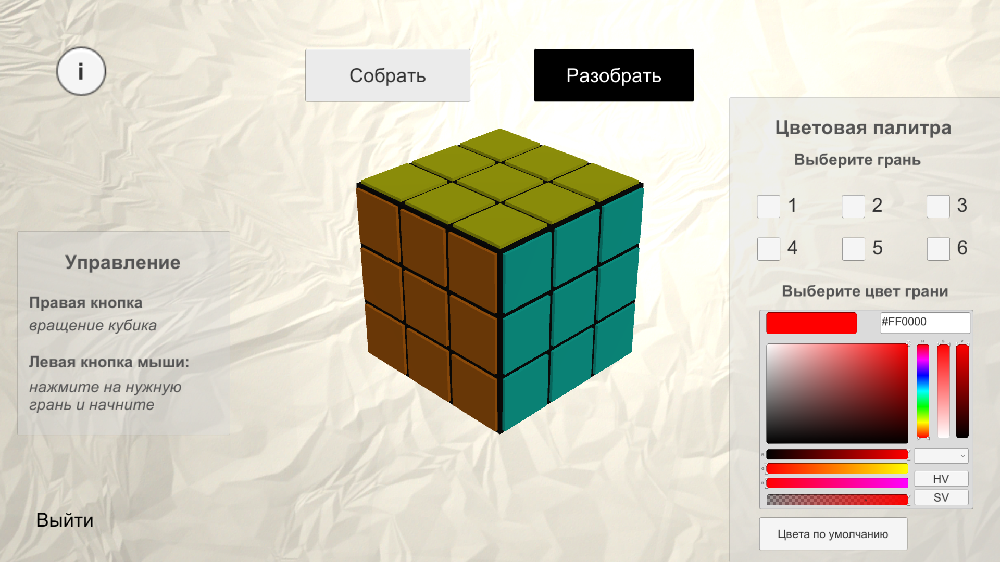
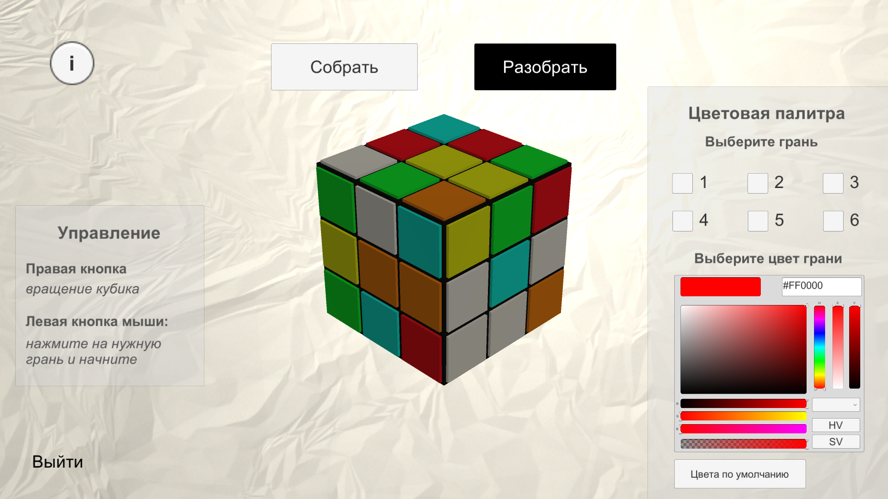
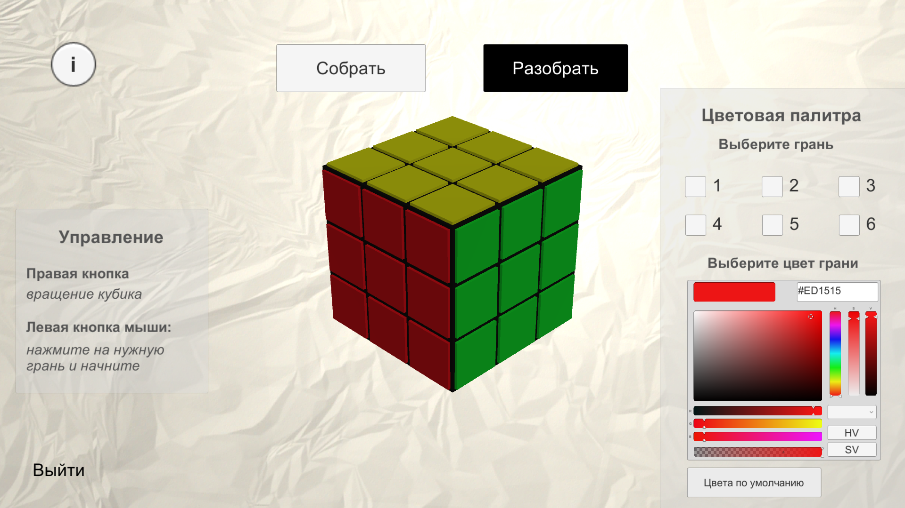
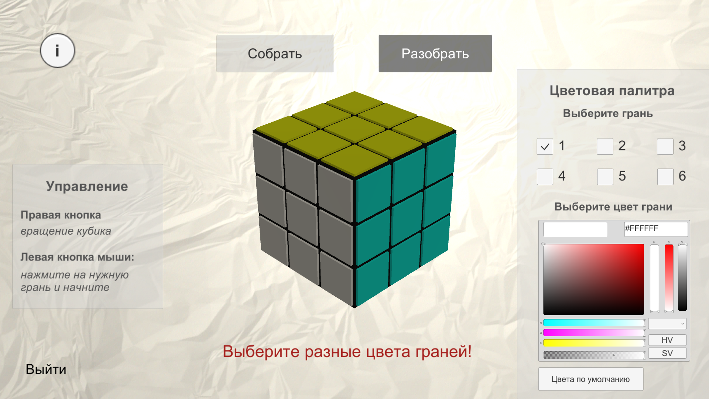
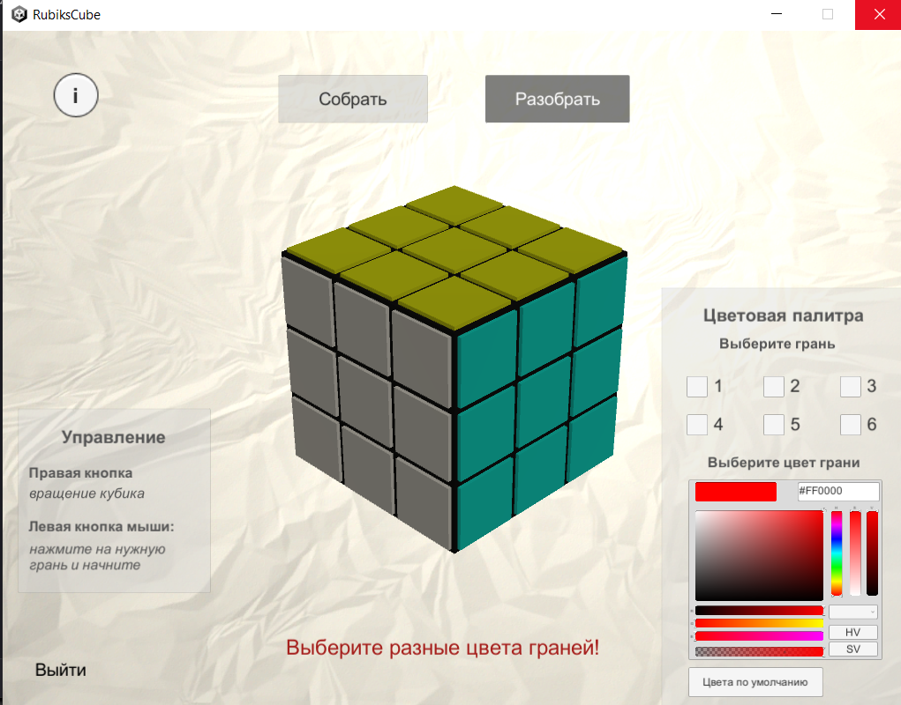

Windows 7 и выше
В системе присутствует одна роль пользователя-игрока. После запуска приложения пользователь видит экранную форму с моделью КР по центру, кнопками, позволяющими автоматически собрать и разобрать модель КР в верхней части, кнопкой, позволяющей вывести информацию об управлении моделью КР, в левой части формы. Кнопка справки размещена в правом верхнем углу экрана, а в нижней правой части предусмотрена панель для выбора цветовой палитры граней модели КР.
Пользователю доступны функции:
Для автоматической сборки кубика Рубика необходимо воспользоваться кнопкой «Собрать» в верхней части экранной формы приложения. После чего сборка в течении нескольких секунд произойдет автоматически по алгоритму Коцембы.
Для автоматической разборки кубика Рубика необходимо воспользоваться кнопкой «Разобрать» в верхней части экранной формы приложения. После чего разборка в течении нескольких секунд произойдет автоматически в рандомном порядке поворота граней.
Для ручной работы с кубиком Рубиком необходимо воспользоваться любым доступным вам манипулятором: мышью или тачпадом ноутбука.
Для смены цветовой палитры кубика рубика необходимо обратиться к панели, размещенной в правой нижней части экранной формы приложения:
Для возврата к стандартной цветовой палитре кубика Рубика после ручной смены цветов пользователем достаточно воспользоваться кнопкой «Вернуться к стандартной цветовой палитре» на панели в правом нижнем углу экранной формы. После чего кубик Рубика вернется к стандартным цветам.
Для просмотра справочной информации необходимо воспользоваться кнопкой «i» в левой верхней части экрана.
После чего откроется экранная форма со справочной информаций о разработчиках и кнопкой для перехода на html-страницу со справочной информацией о системе.
.png)
При разработки системы были предусмотрены ошибки, которые могут возникнуть при работе с системой.
Сообщение об ошибке возникает при попытке выбора одинаковых цветов для двух граней во время смены цветовой палитры. Эта ситуация временно заблокирует функции работы с кубиком Рубика для пользователя, при этом система выведет соответствующее уведомление об ошибке. После выбора различных цветов для всех граней кубика Рубика пользователь сможет вновь начать взаимодействие с ним.
Если возникнет ошибка при попытке открыть файл с HTML-страницей справки, либо система обнаружит повреждение файла, пользователь увидит соответствующее уведомление об ошибке. Это может быть вызвано невозможностью открыть файл в данный момент или его повреждением.
Для завершение работы с программой необходимо нажать на кнопку «X» в правом верхнем углу или кнопку "Выйти" в левом нижнем углу.
2023 г. Самарский университет